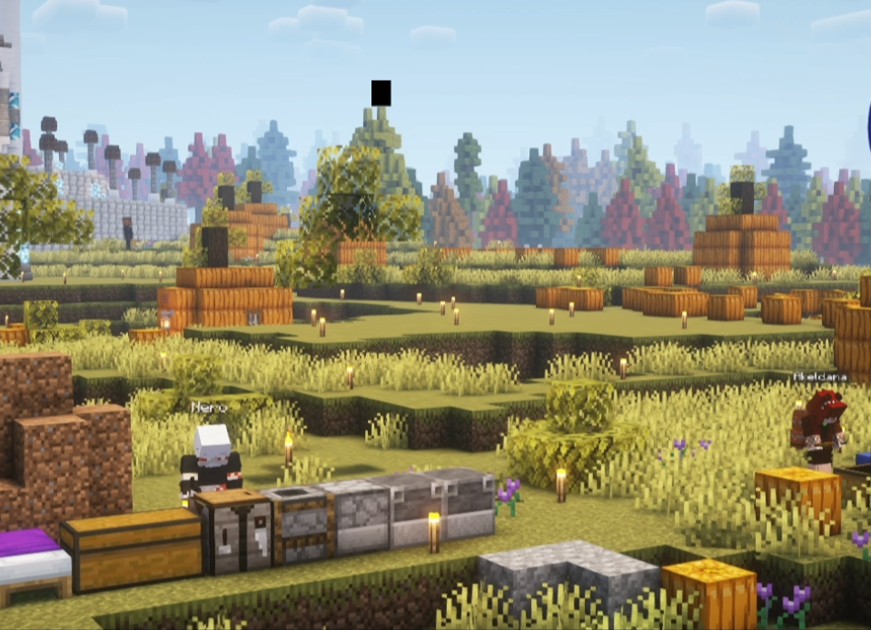
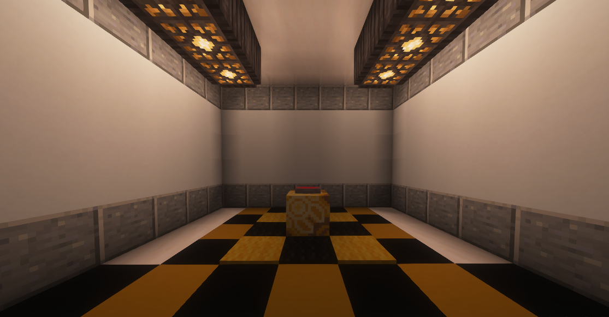
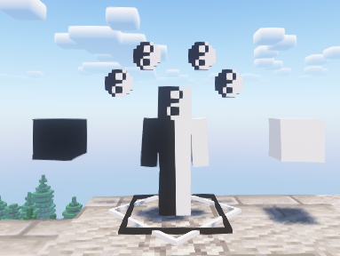
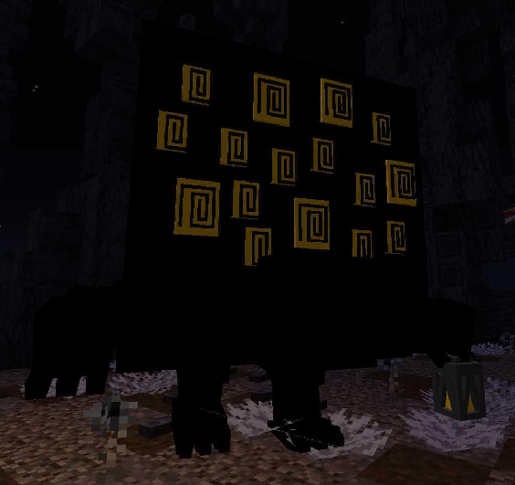
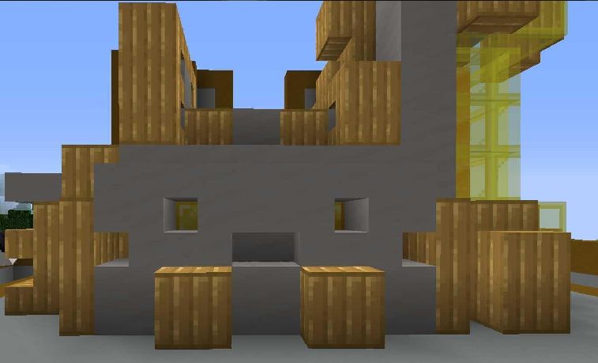
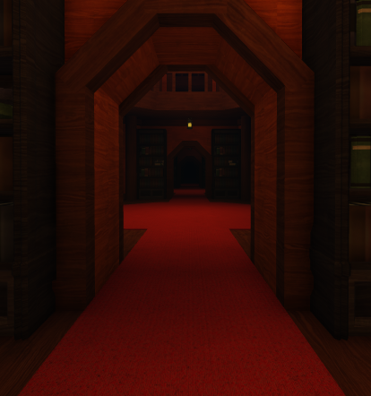
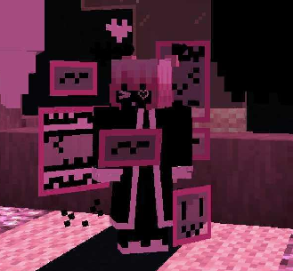
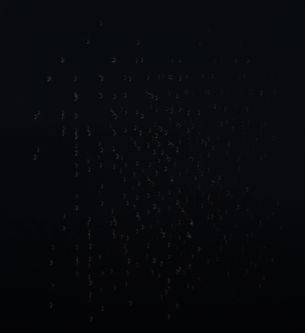

Registros de Anomalias
Como funcionário da A.F.A, seu dever é documentar e analisar todas as manifestações anômalas. As anomalias podem variar entre objetos, entidades biológicas, construções e fenômenos abstratos.
Nomeclaturas
- T - Anomalias originadas de traumas ou fobias
- F - Anomalias originadas de contos de fadas
- M - Anomalias que são causadas por maquinaria amaldiçoada
- D - Anomalias de origem desconhecida
- R - Anomalias ligadas a religião ou filosofia
Níveis de Perigo
- TETH - Possiveis mortes caso consultadas de maneira impropia.
- HE - Capacidade de causar possíveis mortes em condições específicas.
- WAW - Conseguem matar grupos ou até centenas caso situações saiam de controle.
- ALEPH - Aniquilação total da humanidade caso qualquer erro seja cometido.
- NIL - Anomalias ainda a serem classificadas
M-00 - [Classificação Pendente]
Entidade digital com propriedades de vírus e comportamento imprevisível.
Acessar registro completo
T-01 - Operalia
Entidade humanoide autodenominada “maestro”, portadora de arma cortante e comportamento inicialmente pacífico, porém inclinada a iniciar confrontos ritualísticos acompanhados por manifestação sonora anômala coletiva.
Acessar registro completo
T-02 - Remanescents of Love
Entidade amorfa de composição indefinida, com comportamento manipulativo e forte apelo psicológico. Demonstrou capacidade destrutiva extrema, sendo responsável pela neutralização completa de uma instalação temporária da A.F.A.
Acessar registro completo
D-03 - O Botão
Dispositivo anômalo de ativação única que induz compulsão comportamental em indivíduos próximos. Quando acionado, provoca efeitos sensoriais severos em área delimitada e libera descarga energética concentrada.
Acessar registro completo
D-04 - O Parasita
Organismo anômalo de comportamento parasitário capaz de infiltração biológica e posterior manifestação física hostil em forma ampliada. Representa alto risco em ambientes confinados.
Acessar registro completo
R-05 - Yin e Yang
Entidade cíclica composta por dois componentes complementares que se separam a cada 250 anos. Um dos aspectos manifesta-se como figura humanoide errante armada, enquanto o outro assume forma de artefato fixo. Quando reunidos, fundem-se novamente, restaurando sua configuração original.
Acessar registro completo
D-07 - Big Bird
Entidade aviária de grande porte associada à denominada “Floresta Negra”. Atua de forma territorial e demonstra comportamento protetor sobre a região. Quando provocada, manifesta resposta letal imediata por meio de alteração física agressiva.
Acessar registro completo
M-08 - O Proxy
Dispositivo anômalo indestrutível que emite periodicamente ordens direcionadas a indivíduos específicos. O descumprimento resulta em execução conduzida por entidade associada designada M-08-1, conhecida como “Servo do Proxy”.
Acessar registro completo
D-09 - Punishing Bird
Entidade aviária de pequeno porte pertencente ao Trio da Floresta Negra. Demonstra comportamento punitivo direcionado a indivíduos considerados “impuros”. Quando atacada, assume forma agressiva temporária e executa o agressor antes de retornar ao estado basal.
Acessar registro completo
T-011 - Biblioteca de Babel
Local anômalo de estrutura infinita composto por salões octogonais interconectados. O acesso ocorre exclusivamente mediante convite formal gerado pela própria anomalia. O ambiente abriga entidades secundárias hostis e possui probabilidade extremamente baixa de saída, tornando a permanência potencialmente indefinida.
Acessar registro completo
D-012 - Judgement Bird
Entidade aviária de grande porte associada à Floresta Negra. Realiza julgamentos baseados em “pecados” do alvo utilizando balança anômala permanentemente desigual, resultando invariavelmente em condenação. A punição manifesta-se como ataque letal de alcance indefinido.
Acessar registro completo
M-013 - Final Destination
Máquina anômala criada diretamente pela T-02, capaz de executar indivíduos instantaneamente através de mecanismos desconhecidos localizados em sua torre flutuante.
Acessar registro completo
T-018 - A Depressão
Nuvem de fumaça que persegue silenciosamente suas vítimas, induzindo isolamento psicológico até provocar desaparecimentos em larga escala.
Acessar registro completo
M-030 - Garion
Unidade mecânica anômala integrada às operações da A.F.A. Apesar de cooperativa em condições estáveis, apresenta episódios psicóticos intermitentes que cessam apenas após eliminação de um alvo orgânico.
Acessar registro completo